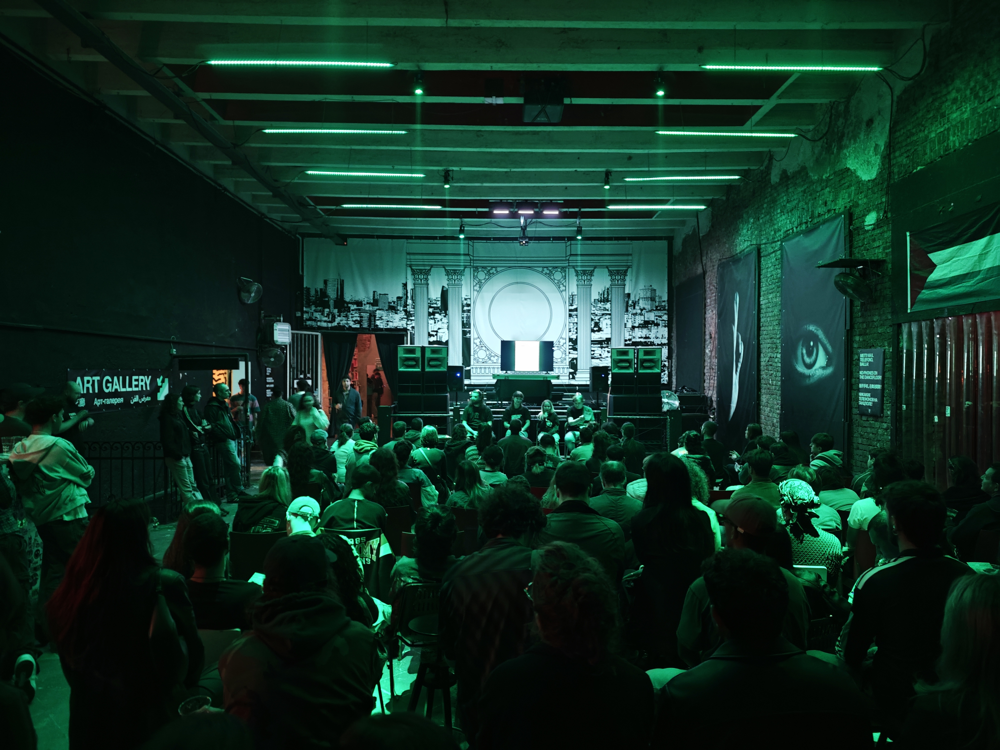
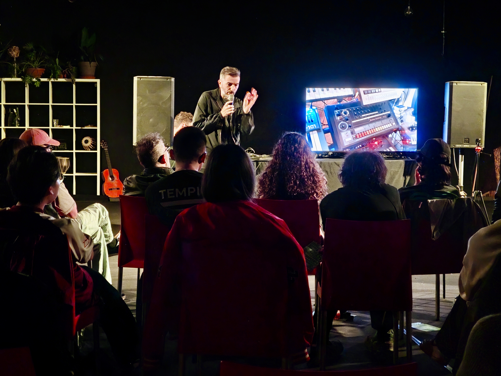
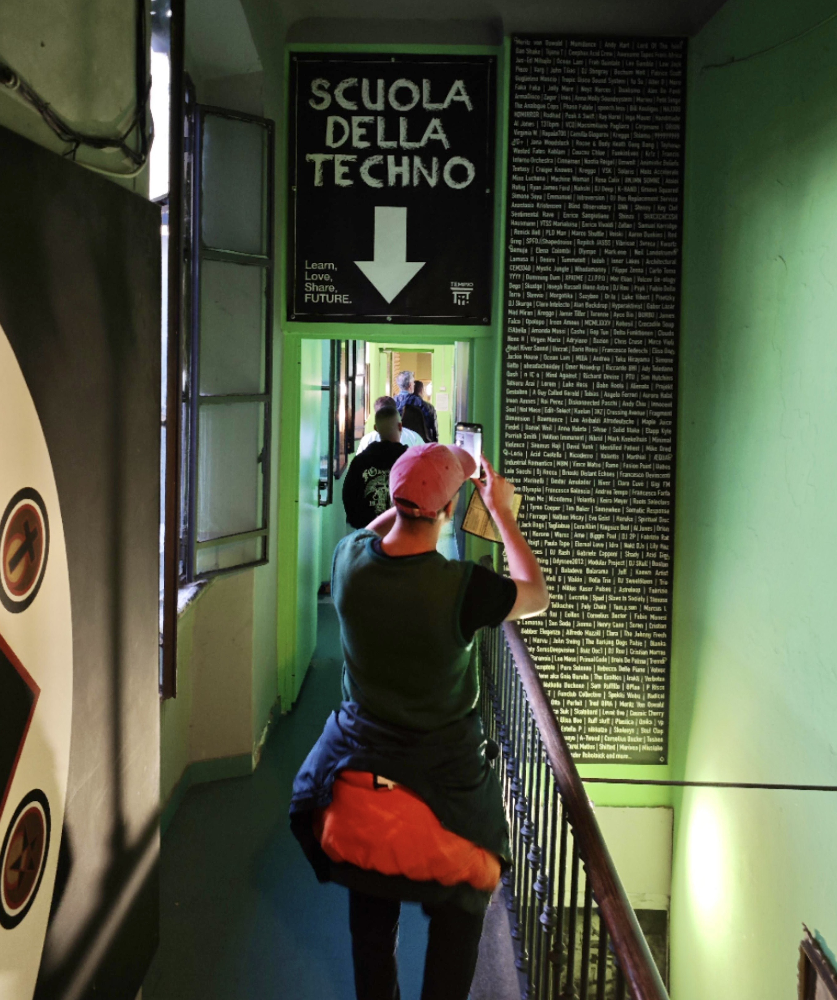
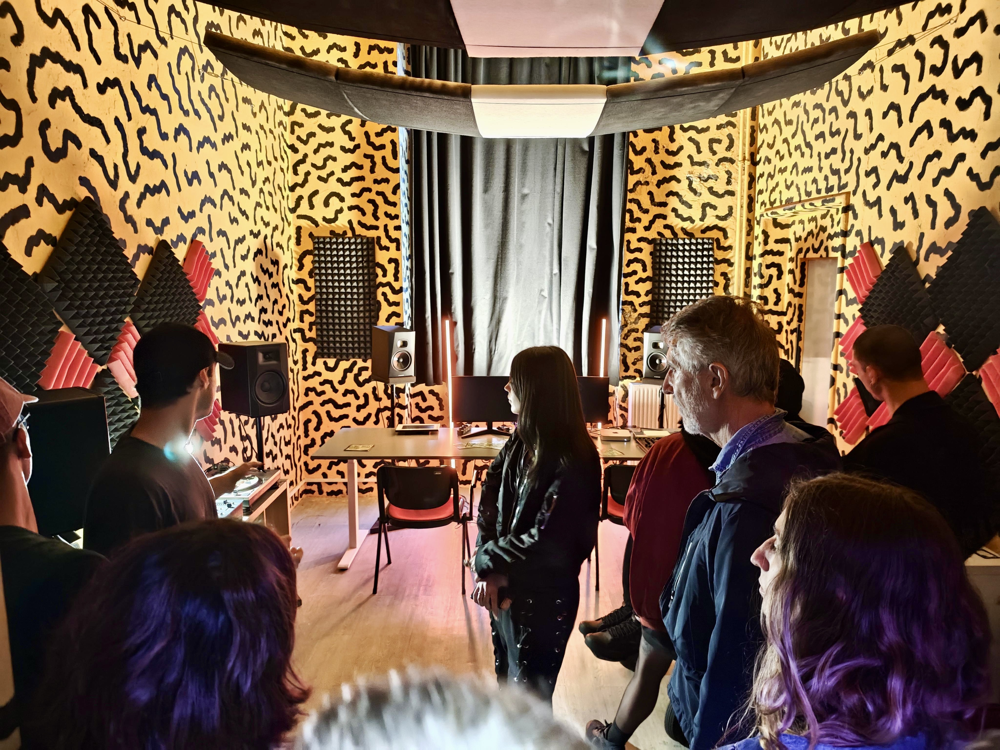
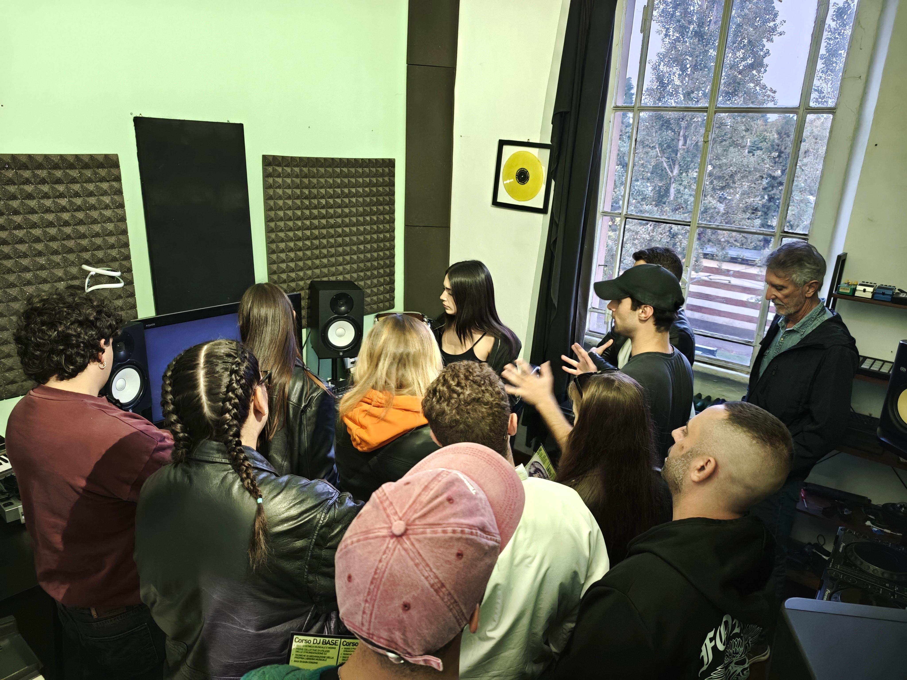

Per decenni la musica techno è stata raccontata quasi esclusivamente attraverso i club, i festival e la notte. In Italia, invece, qualcuno ha provato a ribaltare completamente il punto di vista: trattarla come una disciplina da studiare, trasmettere e preservare.
Nasce così la Scuola della Techno, un progetto sviluppato all'interno del Tempio del Futuro Perduto di Milano che rappresenta probabilmente il primo tentativo organico al mondo di costruire una vera scuola dedicata alla cultura techno, intesa non soltanto come genere musicale ma come fenomeno artistico, storico, sociale e tecnologico.
L'idea rompe uno schema consolidato. Chi vuole imparare a produrre o suonare musica elettronica trova normalmente accademie private, corsi di DJ o tutorial online. La Scuola della Techno propone invece un modello completamente diverso: una comunità permanente nella quale la trasmissione del sapere avviene attraverso lezioni, workshop, incontri pubblici, ricerca storica e confronto diretto tra generazioni di artisti.

Negli anni il progetto ha coinvolto migliaia di studenti, ospitando corsi, masterclass e percorsi formativi accessibili a una platea estremamente eterogenea, dai principianti ai professionisti. Molte attività sono state offerte gratuitamente o a costi simbolici, con l'obiettivo dichiarato di rendere la formazione musicale accessibile anche a chi normalmente non potrebbe permettersela.

L'approccio non riguarda esclusivamente la tecnica. Accanto alle lezioni di produzione musicale e DJing trovano spazio la storia della techno, le sue radici afroamericane, la cultura rave, l'evoluzione dei club europei, la sociologia delle sottoculture, il rapporto tra spazio urbano e musica elettronica e il ruolo delle comunità indipendenti nella produzione culturale.

Questo modello ha iniziato ad attirare l'attenzione anche fuori dall'Italia. Negli ultimi anni la Scuola della Techno ha collaborato con artisti internazionali e realtà di riferimento della scena elettronica. Nel 2026, ad esempio, Resident Advisor ha scelto di organizzare insieme alla Scuola della Techno un workshop gratuito con Amor Satyr, inserendolo all'interno del programma internazionale RA Unlocked, dedicato alla formazione delle nuove generazioni della musica elettronica.

Durante l'anno gli studenti hanno inoltre la possibilità di esibirsi pubblicamente nelle serate dedicate alla scuola, trasformando il percorso formativo in un'esperienza concreta davanti al pubblico. Anche questi eventi mantengono la filosofia originaria del progetto: ingresso gratuito, valorizzazione dei nuovi artisti e costruzione di una comunità prima ancora che di un mercato.
"Ingresso gratuito, valorizzazione dei nuovi artisti e costruzione di una comunità prima ancora che di un mercato."

È probabilmente questo l'aspetto più interessante dell'intero esperimento. La Scuola della Techno non nasce per produrre DJ famosi, ma per costruire consapevolezza culturale. L'obiettivo dichiarato è formare persone che comprendano la storia, il linguaggio e il valore sociale della musica elettronica, riconoscendola come patrimonio culturale contemporaneo e non soltanto come intrattenimento notturno.
«La Scuola della Techno non nasce per produrre DJ famosi, ma per costruire consapevolezza culturale.»

In un'epoca in cui gran parte dell'apprendimento musicale passa attraverso contenuti veloci e algoritmi, il progetto milanese sceglie una strada opposta: studio, approfondimento, incontro umano e trasmissione diretta dell'esperienza. Una visione che, indipendentemente dalle definizioni, rappresenta oggi uno degli esperimenti educativi più originali nati all'interno della cultura elettronica europea.